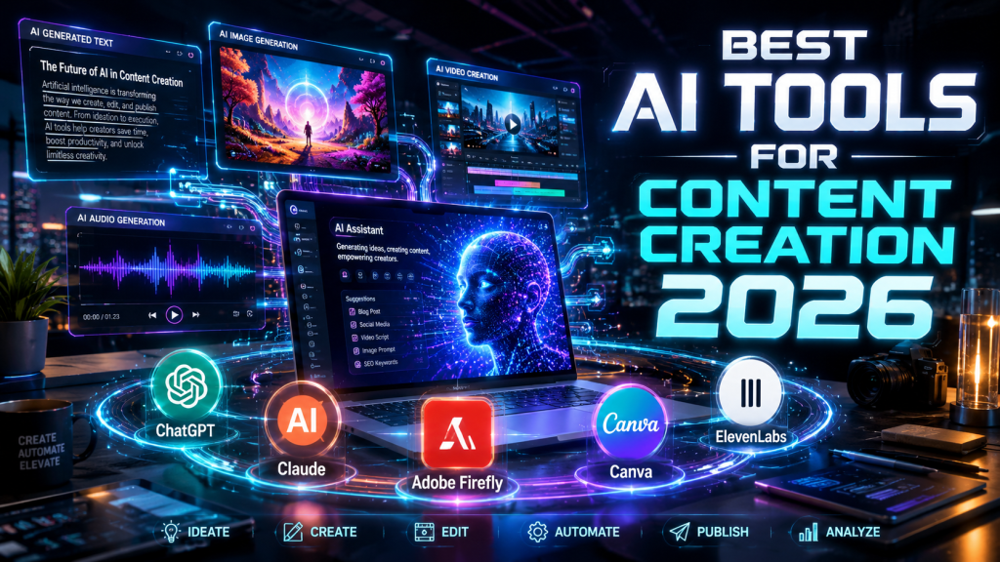
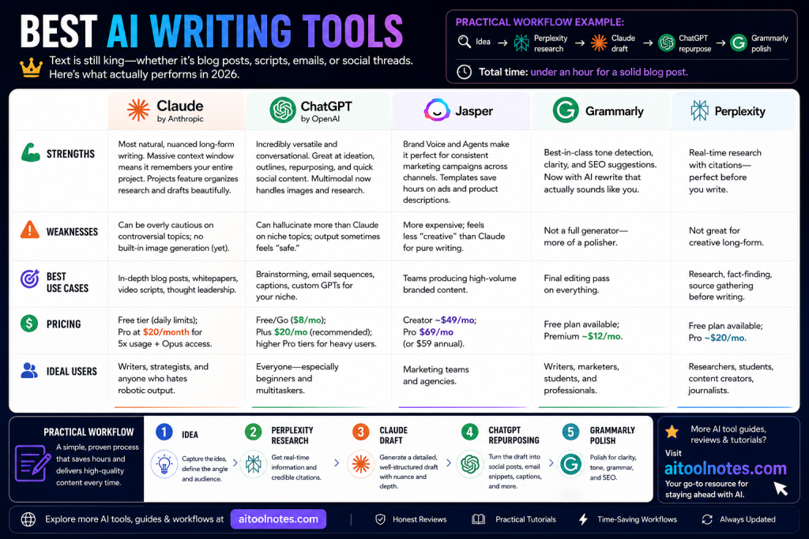
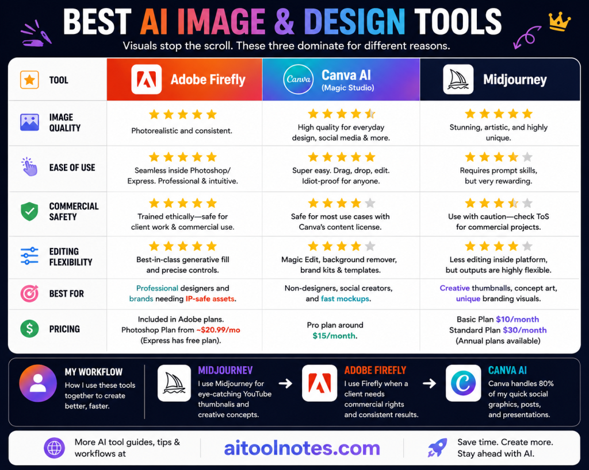
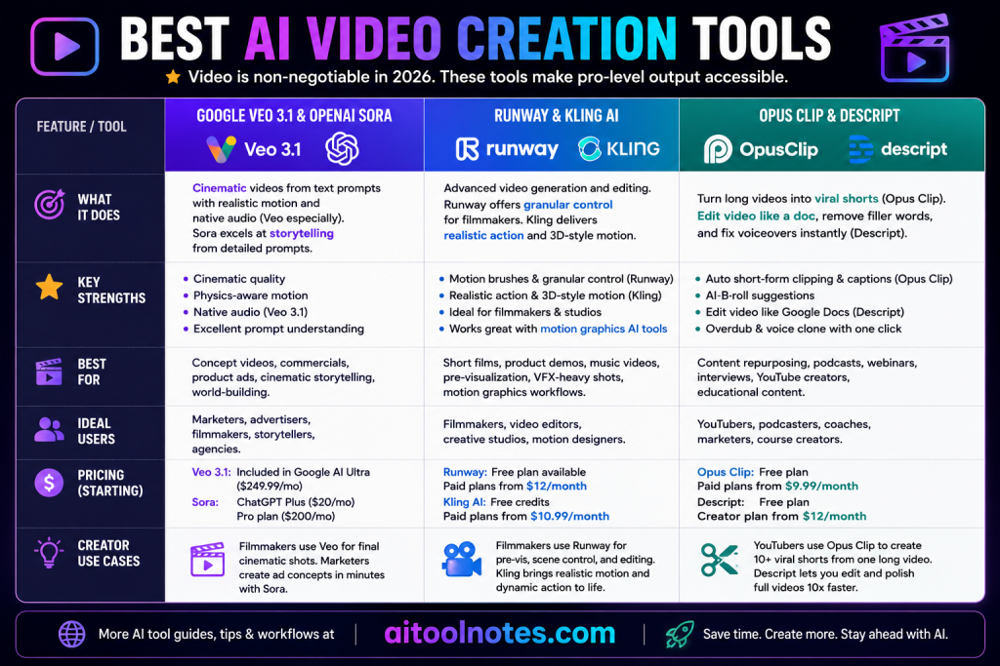
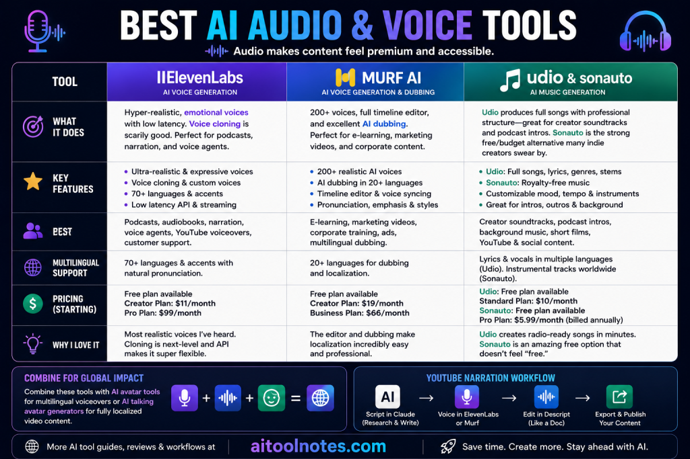
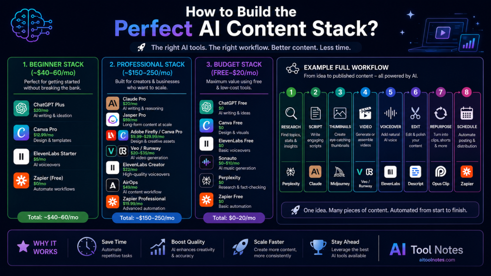

In 2026, creating content that actually cuts through the noise feels harder than ever—and easier at the same time. Platforms are flooded with short-form video, long-form blogs, podcasts, and social threads, yet the creators who win aren’t necessarily working harder. They’re working smarter with AI.
I’ve been deep in the creator and marketing trenches for years—running campaigns, ghostwriting for brands, and building my own YouTube and newsletter audiences. What’s changed in 2026 isn’t just the tools; it’s the entire workflow. A solo creator can now go from idea to polished, multi-platform content in hours instead of days. Teams that used to juggle five freelancers can now handle 3–4x the output with the right AI stack.

But here’s the catch: not every shiny new tool delivers. Many promise the world and deliver generic slop or complicated interfaces that kill your momentum. This guide is different. I’ve personally tested dozens of tools this year (paying for most myself), talked to hundreds of creators in communities like r/AIAssisted, and tracked real results in my own projects. You’ll get honest strengths, real weaknesses, pricing updates as of May 2026, and practical workflow examples you can steal today.
By the end, you’ll know exactly which best AI tools for content creation fit your style, budget, and goals—whether you’re a solo YouTuber, agency owner, blogger, or marketer.
[Insert AI Content Creation 2026 Infographic Here – showing time saved across categories]
Quick Picks: My Top Recommendations for 2026
Here’s the no-fluff summary of what’s actually worth your time and money right now:
- Best overall AI tool: Claude – Natural, context-aware writing that feels human and handles massive projects effortlessly.
- Best AI writing tool: Claude (Pro plan) – Beats everyone on long-form depth and tone.
- Best AI image tool: Midjourney (for stunning creative visuals) or Canva AI (for fast, brand-safe social graphics).
- Best AI video tool: Google Veo 3.1 – Cinematic quality with native audio; Runway Gen-4.5 if you need creative control.
- Best AI audio tool: ElevenLabs – Hyper-realistic voices that even my clients can’t tell are AI.
- Best AI automation tool: Zapier – Ties your entire stack together without coding.
These picks come from real usage, not hype. Now let’s break down why AI matters more than ever.
Why AI Tools Matter in 2026?
Content demand hasn’t slowed—it’s exploded. YouTube wants daily uploads, LinkedIn rewards consistent thought leadership, and TikTok/Reels eat up short-form like candy. Meanwhile, attention spans are shorter and algorithms are pickier.
AI changes the game by:
- Speeding up production – Drafts that took 4 hours now take 20 minutes.
- Automating the boring stuff – Research, outlines, captions, resizing, repurposing.
- Enabling personalization at scale – Brand voices, multilingual versions, audience-specific tweaks.
- Making multimodal creation normal – Text, image, video, and audio all in one flow.
The best part? 2026 tools have better context memory, ethical training data, and commercial-use rights baked in. Creators I know report saving 70–80% of production time while improving quality because they spend more time on strategy and storytelling.
But AI isn’t magic. It still needs your human direction, editing, and unique perspective. The winners combine tools into seamless AI creator workflows that feel like having a full creative team.
If you want even more depth on building these systems, check out this excellent overview of AI tools for content creation that dives into daily creator setups.
Best AI Writing Tools
Text is still king—whether it’s blog posts, scripts, emails, or social threads. Here’s what actually performs in 2026.
Claude by Anthropic Strengths:
Most natural, nuanced long-form writing. Massive context window means it remembers your entire project. Projects feature organizes research and drafts beautifully. Weaknesses: Can be overly cautious on controversial topics; no built-in image generation (yet). Best use cases: In-depth blog posts, whitepapers, video scripts, thought leadership. Pricing: Free tier (daily limits); Pro at $20/month for 5x usage + Opus access. Ideal users: Writers, strategists, and anyone who hates robotic output.
In my workflow, I feed Claude a 10-page brief with brand guidelines and past articles. It spits out a 2,500-word draft that needs only light editing. One creator I mentor cut her weekly blog time from 12 hours to under 3.
ChatGPT by OpenAI Strengths:
Incredibly versatile and conversational. Great at ideation, outlines, repurposing, and quick social content. Multimodal now handles images and research. Weaknesses: Can hallucinate more than Claude on niche topics; output sometimes feels “safe.” Best use cases: Brainstorming, email sequences, captions, custom GPTs for your niche. Pricing: Free/Go ($8/mo); Plus $20/mo (recommended); higher Pro tiers for heavy users. Ideal users: Everyone—especially beginners and multitaskers.
Jasper Strengths:
Brand Voice and Agents make it perfect for consistent marketing campaigns across channels. Templates save hours on ads and product descriptions. Weaknesses: More expensive; feels less “creative” than Claude for pure writing. Best use cases: Teams producing high-volume branded content. Pricing: Creator ~$49/mo; Pro $69/mo (or $59 annual). Ideal users: Marketing teams and agencies.
Grammarly Strengths:
Best-in-class tone detection, clarity, and SEO suggestions. Now with AI rewrite that actually sounds like you. Weaknesses: Not a full generator—more of a polisher. Best use cases: Final editing pass on everything.
Perplexity Strengths:
Real-time research with citations—perfect before you write. Weaknesses: Not great for creative long-form.
Practical workflow example:
Idea → Perplexity research → Claude draft → ChatGPT for social repurposing → Grammarly polish. Total time: under an hour for a solid blog post.

Best AI Image and Design Tools
Visuals stop the scroll. These three dominate for different reasons.
Adobe Firefly Image quality:
Photorealistic and consistent. Ease of use: Seamless inside Photoshop/Express. Commercial safety: Trained ethically—safe for client work. Editing flexibility: Best-in-class generative fill and precise controls. Best for: Professional designers and brands needing IP-safe assets.
Canva AI (Magic Studio)
Turns prompts into complete designs, videos, or presentations. Magic Edit and brand kits make it idiot-proof for social media. Best for: Non-designers, social creators, and fast mockups. Pro plan around $15/month.
Midjourney
Still the king of artistic, high-impact concepts and thumbnails. V7+ has incredible prompt understanding. Best for: Creative thumbnails, concept art, unique branding visuals.
I use Midjourney for eye-catching YouTube thumbnails and Firefly when a client needs commercial rights. Canva handles 80% of my quick social graphics.

Best AI Video Creation Tools
Video is non-negotiable in 2026. These tools make pro-level output accessible.
Google Veo 3.1 & OpenAI Sora
Cinematic quality with physics-aware motion and native audio (Veo especially). Sora shines at storytelling from detailed prompts. Great for concept videos and ads.
Runway & Kling AI
Runway gives filmmakers motion brushes and granular control—perfect for short films or product demos. Kling excels at realistic action and 3D-style motion. For motion graphics workflows, pair them with AI tools for motion graphics to level up animations.
Opus Clip & Descript
Opus Clip automatically turns long videos into viral shorts with smart captions and B-roll suggestions. Descript lets you edit video like a Google Doc and fixes voiceovers instantly.
Creator use cases: YouTubers use Opus Clip for 10+ shorts from one long video. Filmmakers use Runway for pre-vis and Veo for final cinematic shots.

[Insert AI Video Workflow Example Here]
Best AI Audio and Voice Tools
Audio makes content feel premium and accessible.
ElevenLabs
Hyper-realistic, emotional voices with low latency. Voice cloning is scarily good. Perfect for podcasts, narration, and voice agents.
Murf AI
200+ voices, full timeline editor, and excellent AI dubbing. I love it for e-learning and marketing videos. For a deeper look at how it performs in real workflows, check this Murf AI review—it’s become my go-to for studio-quality narration and dubbing.
Udio & Sonauto Udio
produces full songs with professional structure—great for creator soundtracks and podcast intros. See why it’s a favorite in this Udio AI music generator breakdown. Sonauto is the strong free/budget free AI music generator alternative that many indie creators swear by.
Multilingual creators
Combine these with AI avatar tools for multilingual voiceovers or AI talking avatar generators for fully localized video content.
YouTube narration workflow
Script in Claude → Voice in ElevenLabs or Murf → Edit in Descript → Export.

Best AI Workflow and Automation Tools
The real power comes when tools talk to each other.
Zapier:
Automates everything—new blog post → auto social posts, video upload → clips generated. No-code magic.
Notion AI:
Organizes ideas, summarizes meetings, generates content plans inside your workspace.
AirOps:
Builds sophisticated content pipelines and team collaboration for scaling agencies.
Best AI Tools by Creator Type
| Creator Type | Recommended AI Tools | Best Use Cases |
|---|
| YouTubers | Opus Clip + Descript + ElevenLabs + Midjourney | Clip extraction, video editing, AI voiceovers, cinematic thumbnails |
| Bloggers | Claude + Perplexity + Canva AI + Zapier | Blog writing, research, graphics creation, content repurposing automation |
| Social Media Creators | Canva AI + ChatGPT + Kling AI / Runway | Captions, post design, AI short videos, reels generation |
| Marketers | Jasper + Adobe Firefly + Google Veo + Zapier | Ad copywriting, AI creatives, video campaigns, marketing automation |
| Designers | Adobe Firefly + Midjourney | Concept art, branding visuals, AI-generated design assets |
| Podcasters | ElevenLabs + Murf AI + Udio | AI narration, voice cloning, podcast intros/music |
| Agencies | Jasper + AirOps + Full Adobe Creative Cloud Stack | Large-scale content production, SEO workflows, client campaigns |
| Educators | Descript + Murf AI + Notion AI | Course editing, AI dubbing, lesson planning, educational content |
These stacks are detailed further in the AI tools for content creation guide linked earlier.
Comparison Table
| Tool | Category | Best For | Starting Price (2026) | Biggest Strength | Ideal User |
|---|---|---|---|---|---|
| Claude | Writing | Long-form natural content | Free / $20/mo | Contextual depth & tone | Writers & strategists |
| ChatGPT | Writing/All-round | Ideation & quick drafts | Free / $20/mo | Versatility & speed | Everyone |
| Jasper | Marketing | Brand-consistent campaigns | $69/mo | Templates & team workflows | Marketing teams |
| Canva AI | Design/Images | Quick visuals & social | Free / $15/mo | Ease of use & all-in-one | Beginners & teams |
| Adobe Firefly | Images/Video | Professional safe visuals | Creative Cloud | Integration & commercial safety | Designers & pros |
| Midjourney | Images | Artistic concepts | ~$10/mo | Creative quality | Creative creators |
| Google Veo | Video | Cinematic quality | Included in plans | Physics + native audio | Video storytellers |
| Runway | Video | Creative control | ~$15+/mo | Motion brushes & editing | Filmmakers |
| ElevenLabs | Audio/Voice | Realistic voiceovers | Free / ~$22/mo | Emotion & natural delivery | Podcasters & creators |
| Murf AI | Audio/Dubbing | Studio narration | ~$19/mo | Editor & multilingual | Marketers & educators |
| Opus Clip | Video | Repurposing to shorts | Free / $15/mo | Virality scoring | YouTubers & social |
| Zapier | Automation | Connecting everything | Free / paid | No-code workflows | All power users |
How to Build the Perfect AI Content Stack?
Beginner stack (~$40–60/mo): ChatGPT Plus + Canva Pro + ElevenLabs Starter + Zapier free. Professional stack (~$150–250/mo): Claude Pro + Jasper Pro + Firefly/Canva + Veo/Runway + ElevenLabs + AirOps + Zapier. Budget stack: Free tiers + Sonauto for music + Perplexity.
Example full workflow: Research (Perplexity) → Script (Claude) → Thumbnails (Midjourney) → Video (Veo/Runway) → Voiceover (ElevenLabs) → Edit (Descript) → Repurpose (Opus Clip) → Schedule (Zapier).

Practical Tips Before Choosing AI Tools
- Pricing: Start with free trials. Factor in usage—some tools charge per generation.
- Workflow compatibility: Prioritize integrations.
- Commercial safety: Always check usage rights (Firefly and Claude win here).
- Learning curve: Canva is easiest; Midjourney takes practice.
- Output quality: Always edit. AI is 80% there—your 20% makes it yours.
- Scaling: Test one category first, then layer.
Final Verdict
In 2026, the best AI tools for creators and marketers are the ones that disappear into your workflow. Claude and ChatGPT for writing, Midjourney/Canva/Firefly for visuals, Veo/Runway for video, ElevenLabs/Murf for audio, and Zapier to glue it all together.
Budget option: Stick to free tiers + Canva. Professional: Invest in Claude + Firefly + ElevenLabs. Creator workflow winner: The stack that lets you create more while staying authentic.
AI isn’t replacing creators—it’s giving us superpowers. The human touch still wins.
Start small, experiment, and iterate. Your most productive year is waiting.
Which tool are you trying first? Drop it in the comments—I read every one.